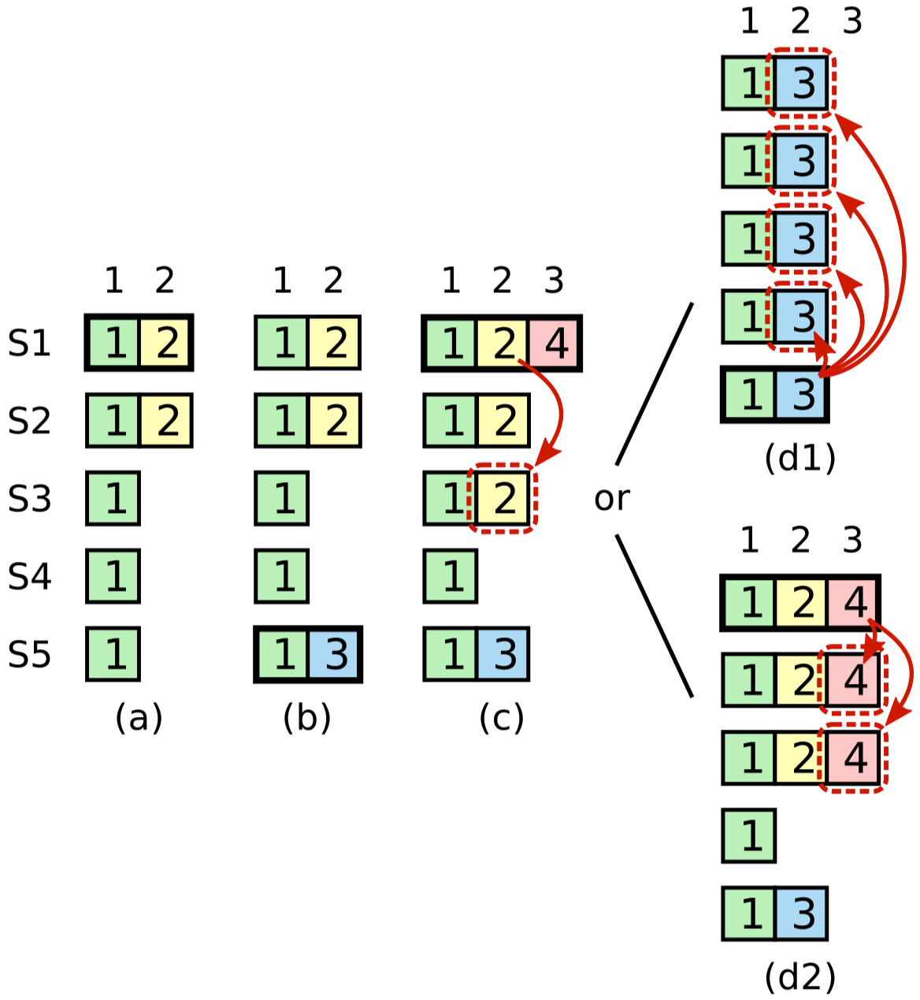

本文阅读这篇论文的笔记，也是对之前那篇Raft论文阅读笔记的补充。
Basic Raft Algorithm
提交之前term的log条目
Raft中只有当前term的log条目被提交时，根据Log Matching规则，之前的term的log条目都会被一起提交。
之所以Raft不通过计数机制来提交之前term的log条目，这是因为：

计数提交之前term的log条目会发送像上图一样的问题：即使一个条目已经存在于超过半数的节点上（条目2），但是还是有可能会被覆盖。上图的流程如下：
- (a)：S1为term 2的leader，并将条目2部分复制到了S1和S2中后就宕机了。
- (b)：S5被选为term 3的leader，并且在本地存储了条目3后就宕机了。
- (c)：S1被选为term 4的leader，它先将其本地还未提交的条目2通过计数机制复制到超过半数的服务器上：S1，S2，S3。成功提交条目2后，再在本地存储条目4之后就宕机了。
- (d1)：如果term 5中S5被选中为新的leader，那么之前被提交的条目2将被覆盖。
- (d2)：如果term 5中S1被选中为新的leader，那么条目2和条目4都将能够被成功提交并保留。
Leadership转移
leadership转移的功能使得Raft leader将其leader身份转移到一个指定服务器上，这在如下场景是有用的：
- 有时leader有需要被维护的需求或者其因为集群成员变更被剔除。如果直接将leader关闭会导致集群有election timeout的时间处于无leader状态，即服务不可用。
- 有时有的服务器可能更加适合作为集群的leader。比如，有的服务器性能更好，负载更低。或者，有的服务器离客户端地理位置更近等。因为Raft选择leader时只对服务器的log有要求，所以被选中的leader在其他方面可能并不是最优的。
在上面这几种情况下，当前leader都可以主动的选择进行转让leader。具体的做法为：
- 旧leader停止接收来自客户端的新的请求。
- 旧leader通过AppendEntries将它的log传输到目标服务器上，确保双方一致。
- 旧leader发送一个
TimeoutNow请求给目标服务器。目标服务器收到后会无视election timeout立即开始一次新的选举。 - 旧leader在收到来自新leader的请求后，会自动变为follower状态，此时leader转移完成。
当然上面的过程中目标服务器是有可能宕机的，那么旧leader必须要重新承担起leader的责任：如果leader转移的过程在大概一个election timeout的时间都没有完成的话，那么旧leader会终止该过程，并重新开始接受来自客户端的请求。同时如果目标服务器其实是在正常工作的，那么也不会有什么问题，在经过目标服务器的选举后，服务也将重新可用。
Cluster membership changes
Safety
成员变更的过程中最重要的问题就是确保不会存在同时选出两个leader的情况，即保证不存在新旧配置下同时存在不相交的majority的节点。
之前的文章中介绍了通过disjoint consensus来变更任意数量节点的方法。
这里会补充一种更加易懂容易实现的方案：一次只新增或者删除一个节点，如果需要变更更多数量的节点可以通过多次调用来实现。

这种方式下，集群还是遵循和之前一样的规定，永远使用log中最新的配置，一旦受到新配置直接采用。所以为了成员变更，leader只需要将新增（删除）了一个节点的新的配置信息放入log中，然后通过AppendEntires接口进行广播复制，当follower接收到该配置信息后会立即使用该新配置信息工作（不用等commit），当该包含了新配置信息的log成功提交后，成员变更就完成了。
之前的成员变更方案需要引入disjoint consensus状态来保证安全成员变更，为什么这种方案就可以直接进行变更呢？

这是因为在一次只变更一个节点的情况下，能够保证新旧配置下的集群majority一定会有一个节点重叠，这就保证了同时只能有一个leader被选出。
当包含Cnew的log条目提交成功之后，可以：
- leader向客户端回复配置变更完成。
- 如果某些服务器不在新的配置之中，此时也到了可以将他们安全关闭的时刻。
- 如果还需要继续增加或者删减服务器，可以继续继续发起请求了。
为了保证配置变更的顺利完成或者失败，需要保证：
- 服务器需要接受那些不属于当前服务器配置集群中的leader的AppendEntires请求。否则，这样的话新增的服务器不会接收来自就集群leader的任何AE请求，新增服务器将无法顺利完成，。
- 服务器需要能够为那些不属于当前服务器配置的集群中的candidate投票，只要其符合一致性检查的规则。这是必须的，考虑一个包含三个服务器的集群需要新增一个服务器，如果过程中leader服务器宕机了，那么需要为了选出新的leader就一定需要该新服务器的投票。
总而言之，服务器在处理RPC请求的时候不应该考虑配置信息的影响。
Availability
成员变动会引入一系列的影响集群可用性的问题。
Catching up new servers

如果新增的服务器的初始状态为空白，那么根据上图(a)，如果在新增S4的时候，S3宕机了，为了成功进行配置变更需要等待S4完全存储所有log，如果落后的log很多，那么消耗的时间可能很长，也就是说集群在很长一段时间内是无法处理客户端请求的。上图(b)也同理，如果连续新增三个节点，那么在新增第三个节点的时候，就至少需要等待一个新增节点拥有完备的log后进行投票。
为了解决这个问题，Raft在配置变更过程中引入了一个额外的阶段：新节点以non-voting身份加入集群。leader会向non-voting节点广播log，但是在提交log和选举中并不将他们计入总数。当新节点拥有完备log的时候，真正意义上的配置变更就可以继续进行了。
这种non-voting节点还可以在其他场景中使用：比如为了分担读请求压力而存在，或者作为后备节点存在。
leader需要判断一个新节点是否已经成功“追上”，建议leader使用如下算法来判断：

因为在新节点“追赶”的同时，leader也可能同时在处理新的用户请求。所以算法将新节点同步的过程分为多轮。如上图所示，每轮中新节点都会将leader的全部新log进行同步，在固定轮数（比如10轮）之后，如果在最后一轮花费了少于一个election timeout的时间就同步完成的话，那么leader就认为该新节点已经同步完成，且会将其真正纳入集群。如果在最后一轮耗时超过election timeout，那么leader终止配置变更过程，并向客户端返回一个错误。而客户端一般来说会进行重试，此时因为新节点已经同步过10轮，重试很可能会成功。
剔除当前leader
如果当前leader并不包含在新配置之中，那么一种直接的处理方式就是让当前leader先通过leader transfer将leader移交给另一个处于新配置之中的节点，然后让那个节点处理配置变更。这种方式在一次只变更一个节点的配置变更实现中更加直接和高效。
但是如果配置变更使用的是那种disjoint consensus方案，那么有可能新旧配置中没有共享任何一个服务器，那么就得使用另一种方案：让leader继续进行配置变更，在新配置提交之后，leader自动退出集群，之后Cnew集群中的服务器将能够超时选出新的leader。
- 首先，在提交Cnew的过程中，可能会出现leader管理一个不包含自己的集群的现象，此时leader广播log时计算大多数时并不会把自己计入。
- 其次，一个服务器即使不在它最新的配置信息集群中，如果超时也应该触发选举。因为在Cnew提交之前，集群可能还需要其帮助。同样的，该服务器发起的选举并不会将计入自己的选票。

如上图所示，如果在Cnew还未复制到集群大多数时，leader就挂了的话。Cnew的节点数量是无法组成majority的，需要Cold的节点的帮助。
Disruptive servers
- 根据上面所说，有可能Cold的leader在Cnew提交后退出集群后，又被选为集群的leader，此时节点通过检查发现Cnew已经提交且自己不在集群内，会再次决定退出集群。
- 另外一种情况，当集群leader切换到Cnew时，不在Cnew的节点将不再收到心跳包，会相继触发选举。因为他们也不会收到Cnew，所以他们并不能分辨出是leader真的宕机了，还是自己被剔除了集群。
上面的过程理论上可以无限的发生下去，影响集群的稳定性。
一种尝试的方案是通过在选举前引入一个新的Pre-Vote阶段：candidate先询问其他服务器他们是否会给自己投票，在收到了majority的肯定答复后，他再开始正常选举过程。
但是遗憾的是Pre-Vote并不能完全解决这个问题，如下图所示：

S1在这种情况下是能够当选的，在S1当选之后，S4会被回滚会Cold。
可以看到单纯的通过log比较是无法解决这个问题的（除非让节点访问所有的节点，判断是否存在Cnew以此来决定自己是否是因为配置变更而超时，这种方案不符合Raft的容错性，故不采用）。
Raft为了解决这个问题，可以修改RequestVote RPC来解决：如果一个节点在收到当前leader的心跳包的min election timeout时间内收到了RequestVote请求，那么它就不会更新term为其投票，它可以忽略该请求或者返回拒绝投票或者推迟该请求。
在这种方案下只要leader在正常工作，能够发送心跳包就没有节点会给其他candidate投票。这并不会影响正常的选举，因为所有的follower至少要等待min election timeout的时间才会发起选举。
但是这种方案是和之前介绍的leadership transfer所矛盾的。因为leader转移会让节点无视超时直接发起选举，为了和disruptive server区分开来，需要在RequestVote中增加一个flag。
系统集成
当面对节点宕机时，可以自动执行配置变更进行节点替换，可以预设一个期望的集群大小，让机器通过调用配置变更，自动维护整个集群的大小在该期望值。
但是这个过程需要有一定的限制。比如，让集群自动剔除一个失效节点可能是危险的，因为这可能会让系统的容错性降低。一个可行的策略是在替换节点时，先新增新节点，再剔除旧的宕机节点，这样能够保证集群的容错性不会下降。
在集群启动的时候，先启动一个服务器，该服务器的第一个log为只包含一个节点的配置信息。这样它单独就组成了一个集群，故该配置信息可以被认定为已提交。此后新增的服务器可以以空log的初始状态被加入集群。
Log compaction
为了减少Log无限制增长带来的存储压力，需要提供compation机制。而compaction机制对于不同的使用场景有着不同的考虑，所以没有一种通用的完美的机制。
选择compaction机制的时候，主要需要考虑的点有：简单性和性能之间的取舍、状态机的数据量大小、状态机数据是存储在内存在磁盘等。
这里提供了几种可能的compaction机制：

上面的几种机制虽然大不相同，但是有一些共性：
第一，集群中的所有节点独立进行compaction。这有如下一些优点：
- 提升了系统的模块化：大多数关于log compaction的复杂度都被包含在了状态机内部，不用和Raft模块进行交互。
- 因为如果相反采用的是leader集中进行compaction的话，leader会需要传输很多follower上log中已经存储的数据，浪费资源。
第二，不论选择什么机制，该机制都会在Raft和状态机之间的交互过程中将一个log前缀的责任转移到了状态机。状态机会将该log前缀以某种方式存储到磁盘上，以便在未来进行恢复状态。当该过程完成后，状态机会通知Raft。Raft在持久化以下信息后，就可以安全删除该log前缀：
- prevIndex：该即将被丢弃的log前缀中最后一个log的下标。
- prevTerm：该即将被丢弃的log前缀中的最后一个log的term。
- prevConfig：该即将被丢弃的log前缀中最后一个配置信息。
第三，一旦Raft丢弃了log前缀，状态机将会有两个新的责任：
- 重启后，在开始应用来自Raft的Log前，需要能够从磁盘中读取数据恢复状态。
- Raft在发现需要传输的log已经被丢弃时，会需要状态机提供一个一致性的状态快照（体现某个时刻的状态），继而Raft可以将该快照发送给落后follower。
Snapshotting memory-based state machines

这种机制在状态机的数据集大小在几GB可以存放在内存中时是个很好的选择：
- 在这种机制之下，状态机操作都可以在内存中高效执行。
- 编程上更加友好，因为在内存中可以使用更加丰富的数据结构，操作不会阻塞I/O。
所有的服务器会各自独立为已经提交的log的创建快照，快照的过程即为将状态机某一时刻状态序列化到磁盘。

leader有时需要通过InstallSnapshot接口来将状态发送给比较落后的follower或者那些新节点，这个状态信息在这里就是指最新的快照。
当follower收到一个快照时，如果其中包含着新数据，那么follower会丢弃其所有log，全盘接受该快照。如果收到的快照描述的仅仅是当前follower存储的log的一个前缀（可能是因为网络原因的重传等原因），那么follower会将该快照涉及到的log删除。
Snapshot concurrently
创建快照过程中的序列化和写入磁盘的过程都会消耗很多的时间。所以这两个步骤最好能够和其他服务客户端操作并发执行，以此来降低对可用性的影响。
但是为了产生一致性的快照，体现lastIndex时刻的状态机状态，单纯的并发执行肯定是不行的，因为不断有新的请求在被处理。这里提供了两种方案使得生成快照期间的处理的新log不影响到快照生成：
- 状态机可以使用不可变的数据接口来支持快照的生成，比如mvcc机制。
- 或者，可以使用操作系统的copy-on-write的支持，比如说，使用Linux中的fork，这样子进程就可以并发的生成快照。
不论是上述哪种机制，服务器都需要额外的内存来进行快照处理。最好提供流式的接口以避免在快照生成前需要将整个快照完全暂存在内存中。特别的使用操作系统的copy-on-write通常会因为false sharing（因为操作系统的copy-on-write是以内存页为单位的）导致使用更多的内存。
如果不幸在快照生成过程中耗尽了内存，那么服务器应该停止接收新的log直到快照生成完毕。虽然这会暂时牺牲掉这个服务器的可用性，但是也不建议去选择终止快照生成，过会儿再重试，因为下次尝试还是会面临相同的问题。
When to snapshot
快照的频率如果过高，那么将占用太多磁盘带宽和其他资源。如果频率太低也不行，有可能会用光存储空间，并且会使得重启时重放log的时间增加。
一种简单的策略就是当log达到一个固定大小时触发快照。如果这个阈值设置的比最终生成的快照大小大很多，那么磁盘的带宽消耗带来的影响将相对较小。
一种更好的策略是将生成快照的大小和log的大小进行比较。如果将生产的快照的大小比log的大小小很多倍，那么可能就值得生成一次快照。但是预测即将生成的快照大小是非常耗时的，所以可以使用之前的快照大小：当节点的log大小超过了之前的快照大小乘以一个expansion factor时，就会开始生成快照。
expansion factor体现的是用磁盘带宽换空间利用率。比如，如果选择expansion factor为4，那么20%的磁盘带宽将被用来做快照（每一字节的快照都需要写入4字节的log），并且最多需要6倍快照大小的磁盘空间（一份旧快照、一份新快照、4倍快照大小的log），虽然最后会被清理到只剩一个快照。
因为快照会影响机器的性能，进而一定程度的影响客户端性能。所以最好能够控制每次仅调度少于半数的节点进行快照，这样理论上处理客户端请求的性能能够不受影响。而当leader希望进行快照的时候，可以先转让leader。
Implementation concerns
- 保存和载入快照：最好能够提供状态机到磁盘文件的流式接口，这能够有效避免将整个状态机状态都放入内存缓冲区中。另外压缩数据流并且加上校验和都很不错。为了保证快照的完整性可以考虑先将快照写入一个临时文件，等到文件内容确认落盘后再进行改名操作。
- 在开发过程中需要意识到log可能是截断的，实现上需要避免越界访问。
- 在开发过程中，建议每次应用一个log都进行快照，这样能够帮助更快定位bug。当实现完成后，再加上快照策略。
Snapshotting disk-based state machines
这种方式将状态机的状态数据主要存储在磁盘上，一般应用于状态机的数据集大小大于内存容量的场景。
所以这种方式中，一个log被应用就对修改对应磁盘上的状态机状态，修改完成后就可以等效的认为一个快照生成了。所以理论上，只要一个log被应用了，该log就可以安全的被Raft所丢弃了。
这种方式的主要问题就是每次应用log都会导致一系列的磁盘随机写操作，性能上可能并不理想，所以一般会先在内存中暂存写操作，然后一并写入磁盘，然后Raft log就可以被安全的丢弃了。
这种基于磁盘的状态机为了提供一致性的快照，也需要借助copy-on-write的技术。所幸，磁盘通常是按照一个个逻辑区块进行组织的，所以实现copy-on-write应该不是很困难。也可以使用操作系统的机制来实现，比如使用Linux上的LVM（logical volume management）。
在传输快照（即磁盘上的状态机）时，可以使用如下算法来避免大部分的性能损失：
- 记录磁盘上的每个区块的上次修改时间。
- 在不停止服务的情况下，将磁盘上整个状态机的内容一块一块的传输给follower。因为同时有并发的请求发生，所以发送的状态机信息很可能是不一致的。
- 使用copy-on-write技术来创建一个一致性的磁盘快照。
- 当快照创建完成后，将那些在之前步骤2传输过程中被修改的区块重新传输到follower上。
Incremental cleaning approaches
Log cleaning的方式使用log来作为系统状态的存储形式，这样对系统状态的修改可以变为磁盘的顺序写提升性能，辅助以索引结构可以让随机读操作也更加的高效。
在log cleaning方式中，log会被分割成一些连续的被称为segments的区域，然后会根据以下算法进行压缩：
- 选择已经积累了大量过期条目的
segments。 - 拷贝这些
segment中那些决定了当前状态机状态的条目到log的首部。 - 清理掉这些
segments的空间。
上述过程可以和正常的服务操作并发进行。

在Raft中应用log cleaning时，如果直接使用Raft log来作为状态机状态的话，随着清理的进行会为连续的log造成一个个“洞”，使得需要修改AppendEntries的逻辑进行配合，这是不可取的。
所以如果要使用log cleaning的话，可以考虑将状态机的log和Raft的log分开。Raft会存储最近的连续的log，当Raft的log大小增长到一定的大小时，Raft log的一定前缀的log会被写入状态机的log，写入成功后，这个前缀就可以安全的清理掉了。由此状态机的log将和Raft解耦。
基于这种模式，一种可以想到的优化是直接将Raft的log文件合并到状态机的数据结构中，这样虽然可以避免一些处理过程，但是加重Raft和状态机的耦合，因为状态机需要能够理解磁盘上的Raft log。
log-structured merge trees
LSM tree方式和log cleaning一样也是将大部分状态机数据存放在磁盘上，但是不同点在于数据的组织形式不再是log。
LSM tree会将一些最近写入的key放入内存中存储（辅以log），当内存中的数据到达一定大小的时候，LSM tree会将数据根据key排序然后写入一个被称为run的文件中。run文件一旦创建是不可以被修改的，但是会被周期性的合并，产生出一个新的run文件，并丢弃旧的。合并的过程类似归并排序，相同的key只保留一个最新的版本。
读取一个key的过程会从内存开始，如果没有命中则查看各个run文件。为了避免查找不存在的key导致遍历全部数据的消耗，可以考虑使用布隆过滤器。
在Raft中使用LSM tree显得很自然，Raft log可以辅助内存中数据，当增长到达一定大小后，将内存中的数据写入磁盘变为一个新的run文件。在向follower发送状态数据时，可以直接发送所有的run文件，因为run文件是不可变的，所以不需要考虑一致性问题。
Client interaction

上图展示的是客户端和集群节点之间可能的交互方式：
ClientRequest RPC：客户端写请求。RegisterClient RPC：在集群中为新客户端注册一个session。ClientQuery RPC：客户端读请求。
Finding the cluster
因为集群成员可以动态变化的，所以客户端需要能够高效的找到集群。共有两种通用的方式：
- 客户端使用网络广播或者多播来找到集群的所有服务器。这种方式要求运行环境的支持。
- 客户端可以使用外部服务，类似DNS等，来发现集群服务器。要求这个依赖的外部服务返回的服务器列表一定要至少是真正集群服务器列表的超集。所以在进行集群成员变更的时候，应该先去外部服务中注册新服务器，等到成员变更完成后再去更新删除旧服务器。
Routing requests to the leader
客户端在找到集群后需要再从集群中找到leader，所以其会先随机的选择一个服务器发送请求，如果该服务器不是leader，那么服务器会可以选择做如下其中一个：
- 拒绝服务该请求，然后返回客户端自己所知道的leader的位置。
- 或者，该服务器代客户端转发请求给自己所知道的leader。这种方式可以让客户端的读写请求均被follower处理，减少了leader上客户端连接数，有一定的意义。
无论选用哪种机制都需要避免让过期的leader信息无限制的延迟客户端请求。总体来看，leader、follower、client上的leader的信息都有过期的风险：
- Leader：比如一个节点自以为自己还是leader，但是其已经被分区隔离，这种情况下，如果没有什么额外的机制，那些与其通信客户端的请求可能将永远无法被处理。所以，如果leader在一个election timeout中都没有成功发送心跳包给集群超过半数节点，那么将要自动放弃leader身份。之后客户端将有机会去尝试联系其他的服务器。
- Follower：follower中存放的leader的身份信息需要在他们发起新的选举或者当term变更时被清除或者更新。否则这种过期的leader数据可能会形成环路让客户端的请求无限被转发。
- Client：如果客户端失去了和leader（或者其他节点）的连接，不应该再次重新连接该leader，因为可能会因为该节点宕机而导致长时间无法建立新的连接。所以客户端此时应该去尝试其他随机选择的一个节点。
Implementing linearizable semantics
Raft需要能够应对来自客户端的重复请求，保证只能执行一次。一种可能导致客户端重复请求的场景如下图：

状态机在要回复客户端时宕机了，导致客户端超时重传，状态机在重启后收到这个重复请求后，如果没有特殊的机制，那么请求将被重复执行。
在传输层层面的重复请求可以通过TCP协议处理，这里所讨论的是TCP层无法过滤的请求。
事实上这个问题是大部分共识算法，特别是那些需要提供linearizablity的共识算法，所都需要面对的。
基本的思路是服务器暂存那些处理过的客户端请求的结果，然后使用这些数据来进行过滤重复请求。
实现上，每个客户端需要被赋予一个唯一的id，并且每个客户端都为其请求中的命令设置一个唯一的单调递增id。每个服务器的状态机则为每个客户端都维护一个session，在session中会记录一系列命令id与其相应的响应信息的条目。这样如果一个服务器收到一个重复命令，不会重复执行，直接返回session中的响应。
为了不让session存储的数据无限制的增长，客户端的请求中会携带上其没有收到响应的最小的那个命令id，这样服务器就可以安全的把低于该id的所有响应数据给清理掉了。
leader在replicate log的时候，需要额外记录客户端id，客户端最小未收到回复命令id，还有时间戳（下文方式二）。各节点状态机会在应用log的同时生成响应结果作为对应客户端session的数据，并根据最小命令id对session数据进行清理。
另一个问题是，session的数量也不能不加限制的增长，所有这就又带来了两个问题：
- 服务器怎样对什么时候才能清理某个客户端的session达成一致？
- 如果一个实际还在运行的客户端的session被服务器过早的清理了怎么办？
对于第一个问题，一种选择是各节点使用固定大小的LRU策略，另一种选择是基于时间。前者比较直接，后者方案中，leader会在replicate log的时候携带上当前时间，这样所有服务器都可以基于log中记录的时间来判断是否某个客户端是否在一段时间内（当前时间减去log记录时间）没有任何操作，如果是，则认为该客户端已经失效，进行session清理。当然如果客户端想要维持session可以通过定期发送keep-alive请求，leader会将这些消息进行共识以此抑制所有节点上对应客户端session的过期。
对于第二个问题，在收到一个没有session记录的客户端请求的时候，因为leader无法判断该客户端是刚被清理掉的还是为一个新客户端，故为了避免重复执行命令考虑不能直接为其分配session，并返回错误。发生这种情况时应该要求客户端重新调用RegisterClient接口，来为其重新注册分配一个session。
Processing read-only queries more effciently
读请求的处理取决于应用对于一致性的要求，如果要求强一致性则需要节点间相互更多的通信，性能更低，而如果能够放松一致性要求的话则能够相应的提升处理性能。
因为读请求不涉及log的共识，所以理论上应该能够达到比写请求更高的性能。
也许会有读者有疑问只要让leader来处理所有的读请求不就能够保证强一致性了吗，怎么会需要节点间通信呢？
正常情况下是这样的，但是一个leader可能因为网络分区被隔离，同时有新的leader在另一个分区内被选出，这时leader也可能返回过期数据。（即时使用了之前提到的leader自我退位机制，这样的leader也可能在一个election timeout内返回过期数据）
为了解决这些问题，leader需要：
- 如果一个leader是刚启动的，还没有区分log中哪些是已经提交的，可以立即共识一个内容为空的log条目，这样只要该log提交了，根据Leader Completeness Property，当前leader就可以确定之前的所有log都已提交。
- leader将当前的commitIndex存入一个局部变量readIndex中。
- 在处理读请求前，当前leader为了确定自己没有被新的leader所取代，需要发送一轮心跳包，一旦收到超过半数的确认消息，那么leader就可以确保在发送心跳包的时刻自己依旧是合法leader，故readIndex就应该是leader的当前commitIndex。
- leader等待状态机应用log至readIndex。
- leader处理读请求并响应客户端结果。
基于以上算法，一个简单的优化就是将若干读请求打包一起处理，以此来分摊发送心跳包的消耗。
为了分担leader的压力，可以也允许follower处理读请求，为了能够返回正确的数据，follower得先发送请求给leader询问目前的readIndex（leader会执行上述算法的1-3步），然后follower再基于readIndex和其自己的状态机处理打包好的读请求。
写到这里时，我其实产生了一个疑问：
什么叫做linearizable read？在上面的leader算法执行过程中从赋值readIndex到发送完心跳包后使用readIndex的过程中，有可能commitIndex已经被更新了，即readIndex已经不再是最新提交的值了。同理，假设leader向follower返回readIndex的请求包在网络中传输了一个小时才到达，此时follower还使用该readIndex处理读请求也符合linearizable read吗？
论文中有对linearizable read有所描述：Linearizability requires the results of a read to reflect a state of the system sometime after the read was initiated; each read must at least return the results of the latest committed write。
根据linearizability的定义，只约束了那些不重叠操作之间必须要保证先后顺序，即如果操作1开始于操作2结束后，操作1必须能够观察到操作2的操作结果。但是linearizability对于重叠操作并没有具体的顺序约束，也就是说读操作只要能够返回 [读操作发起，读操作返回) 区间内任意一个时刻的系统状态，就是符合linearizable read定义的。
这也是为什么leader需要发送心跳包来确认自己leader身份。如果没有这个步骤，则有可能：
有两个客户端C1和C2，C1先发起读操作被真正集群leader所处理返回的数据为readIndex为x时的状态机状态，在收到第一个读请求响应后，C2发起读请求，该请求由一个分区内的伪leader处理，返回了readIndex为y的状态机状态，此时y是有可能小于x的，这样就打破了linearizability。
1 | C1: |<---read to leader 1--->| |
所以，在上述Raft处理读请求算法中，只要确定了leader身份，节点可以返回读请求开始后任意时间的状态机状态都是合法的，并不要求是最新状态。
Using clocks to reduce messaging for read-only queries
上一小节介绍的算法中一轮心跳包只能保证一批读请求能够安全的执行。下面将介绍一种方式能够保证再发送完一轮心跳包之后一定时间内的读请求都可以安全处理。
为了进行优化，需要让心跳包提供某种形式的lease。一旦leader收到了超过半数节点的心跳包响应，那么leader就可以认为在大约一个election timeout的时间内不会有新的leader产生，故leader可以相应延迟其lease的有效期，在lease有效期内leader可以直接安全的处理读请求。
特殊情况，需要转让leader的，那么旧leader在发起转让之前需要先将其lease作废。

如上图所示，如果没有时钟偏移，那么每次收到大多数节点的心跳回复时，leader都可以将lease延长至start + min election timeout的时间。如果存在时钟偏移，那么时钟可能存在后退或者暂停的情况，这可能会导致lease实际有效时间变长，有返回过期数据的风险，readIndex将不再安全。
为了在上述基础之上增强一致性保证，可以让客户端请求携带上其所看到过的最新的log的下标，而处理该请求的节点，则不会返回该下标之前的数据给该客户端，保证客户端所见数据单调。
Correctness
Building correct implementaions
对于端对端的测试，可以使用Japsen和Knossos。
在测试阶段，首先Raft服务器的配置可以被修改来提升偶发事件的概率。比如，可以将Raft服务器的election timeout设置的非常低并且心跳包间隔非常高，这样会使集群更容易发生leader change，易于发现bug。另外让服务器更加频繁的创建快照也能导致更多的节点log落后，并需要接收快照来追上。
另外，可以控制环境来提高偶发事件的发生概率。比如，让服务器随机的重启或者频繁的进行配置变更。在服务器上启动其他的程序竞争硬件资源。控制网络进行随机丢包、增加随机网络延迟、随机中断和恢复网络连接、随机发生网络分区等等。
Implementation and performance
Implementation
Threaded architecture
Raft可以使用下图这种线程模型来非常直观的实现。

Performance considerations

一般情况下，Raft中最耗时的步骤为向磁盘写入新的log和通过网络向follower复制log的过程。
Writing to the leader’s disk in parallel
在无优化的情况下，共识log的的关键路径中有两次同步的磁盘写操作，第一次为发送AE前leader同步写log，第二次是follower在响应前同步写log。这两次写操作造成了巨大的延迟。
幸运的是，leader的

在上图这种优化下，leader的向follower复制log的过程可以和磁盘写log并行执行，但是对于follower的写log还是一个同步的过程。leader需要等到至少有超过半数的节点（包括leader自己）成功持久化log之后，才能认为该log已经提交。
上述过程理论上最多能够减少一半的持久化log带来的延迟。
Batching and pipelining
大多数请求处理的开销都能够通过打包处理来进行分摊，比如，在一个请求中发送两个log条目的速度比发送两个包含一个log条目的请求的速度快很多。
另外，而让复制log的过程流水线式工作（pipelining）：允许在一个log在被处理的同时开始处理另一个log，也能大大降低延迟。
因为Raft天然支持一次发送多条log所以batching的是实现比较自然，但是过犹不及，为了性能考虑，只需要考虑为单个请求内log的总大小设置一个上界即可。
另外，因为AppendEntries的一致性检查，所以在Raft上实行流水线工作是安全的。为了支持流水线，leader可以乐观的对待各个follower的nextIndex：当leader发送完请求后，不会等待响应，而是立即乐观的更新对应follower的nextIndex。这使得下一个RPC能够流水线的发送下个请求。因为这里是乐观的设置，所以当一个RPC超时了，那么leader需要将对应的nextIndex回退到它原先值进行重试。如果AE的一致性检查失败了，那么leader可以选择将nextIndex回退更多进行重试或等待之前的log确认后再重试。
一个是实现batching和pipeling的技术是双缓冲技术，通过双缓冲技术能够让请求大小随着负载的变化而变化，对于流水线而言，理想的状况是在第一个batch的处理到一半的时候发送过去，这样理论上能够降低一半的延迟。
Related work
目前和Raft相类似的有：Paxos，ViewStamped Replication，Zab。他们都是针对fail-stop类型的错误设计的共识算法。
下面会从各个方面进行对比。
Leader election
这一节对比不同的共识算法如何应对leader选举问题。
通常来说，leader选举涉及一下几个问题：
- 如何检测一个失效的leader
- 如何应对已经被替换的失效leader
- 如何选出一个新的leader
- 如何确保leader拥有所有已提交的条目
Detecting and neutralizing a failed leader
Paxos，Zab，和VR都没有明确说明自己的失效检测机制是什么，这可能是因为失效检测机制往往被认为是和共识算法主体相互独立开来的。但是在Raft中心跳包并不仅仅承担着失效检测的任务，还会顺道提醒follower最新的commit index。
在异步网络中，理论上没有任何一种方式能够完美分辨出宕机节点和执行很慢的节点。所以错误检测机制发生误判时，可能就会导致在运行的失效leader存在，为了避免脑裂问题的出现，必须要处理失效leader。
这些不同的共识算法都是使用单调递增的数字来应对失效leader，在Raft中为term，在Paxos中为proposal number，在VR中为view，在Zab中为epoch。只要一个服务器见过更大的数字，那么它就不会接收来自失效leader的更小的数字。大多数算法实现中，服务器在拒绝小数字请求时，会附带上拒绝原因，就像Raft中的currentTerm。
不同的算法使用不同的方式来赋予term。Zab和Raft使用的是大多数投票制。而Paxos和VR则将数字空间分隔开，不同的服务器不会竞争一个特定的数字（比如使用round-robin的方式按序分配数字给各个服务器）。
selecting a new leader and ensuring it has all committed entries

Paxos和Zab可以选择任何服务器作为leader，而其他的共识算法则限制了只有符合了规则的服务器才能被选做leader。
由于Paxos和Zab可以选择任何服务器作为leader，所以在选择服务器的时候可以按照自定义偏好进行选择，比如选择离用户更近的数据中心内的节点等。而其他的共识算法则不能这样，只能依赖于额外的leader transfer机制来实现类似功能。
Viewstamped Replication Revisited使用一种round-robin方式来选择哪个服务器会成为leader。如果一个n个服务器的集群中，view为v，那么当前的leader为v%n号节点。这种方式的一个优势为客户端能够根据当前的view猜到leader。
最初的VR和Raft的机制很像，只有持有最新数据的leader才能够被选为leader。这样避免了从follower向leader的数据流动，将数据流动简化为：客户端→leader→follower。VR会使用一个单独的服务器来管理选举的过程（view manager），它会从其他服务器中找出持有最新数据的那个，然后通知它成为了leader。
因为Paxos，Viewstamped Replication Revisited和Zab在选择leader的时候不考虑log，所以需要额外的机制进行传输log确保leader拥有所有已提交的log。Paxos的leader会为每个不知道是否已经提交的值执行single-decree Paxos，直到leader持有了所有的已提交数据。而Viewstamped Replication Revisited和Zab则是让其他服务器将他们的所有log都发送给新leader，然后leader选择采用最新的数据。
Log replication and commitment
log复制的过程通常需要leader和follower之间进行一轮通信，并且通常可以使用打包和流水线来进行优化。
对于Raft，Zab和VR来说所有append和提交的log条目都要按照顺序进行，所以follower的log总是和leader一致。传统上来说，Muti-Paxos允许服务器以任何顺序接受和提交条目，但是因为命令还是需要按序应用到状态机，所以这并不能提供很大的性能提升。
Cluster membership changes
为了保证任意配置变更的安全性，变更的过程必须是一个两阶段的协议。比如，第一个阶段将所有旧配置的机器都停止，第二阶段启用新配置。而在Raft的任意配置变更协议中，第一阶段则是先提交转换到joint consensus状态，第二阶段再切换到新配置。
α-based approaches
这是Lamport为Paxos提出的配置变更方法，依旧是两阶段：
- 新的配置提交在第i个log条目，那么
- 该新配置将在第i+α的log出生效。
其中α是可以配置的。集群在配置变更的过程中最多还可以处理α个请求。
但是这种方式中α限制了Paxos集群的并发度。因为当最新的log和第一个uncommitted的log的距离为α时系统就必须停下来等待，因为第一个uncommitted的log可能是包含配置变更的log。当然α可以被设置的很大，但是这样配置变更的过程就被拉长了，这种情况下为了加速配置变更可以考虑使用复制on-op条目。
Zab
Zab的成员变更方法和Raft的joint consensus类似，并且和Raft兼容：
- 一个包含着新配置的log条目会被同时提交到旧集群和新集群中。（旧配置下的leader可以继续处理请求，但是除非它还是新配置中的一员，否则这些后续的log条目将不会被标记为提交）
- 之后，旧集群的leader会向新集群中发送一个
Activate消息，提醒新集群该新配置已经提交完成，可以开始在新配置集群下选出新的leader。如果，旧集群leader还是在新集群下，那么它可以继续作为leader工作。
上述过程其实就是将Raft的joint consensus中第二步的新配置log提交换成了activate消息，但是由于该消息是不走共识的，所以Zab的失败恢复会更加复杂。
Replicated state machines vs. primary copy approach
在主从复制的模式下，主节点在收到客户单请求后不需要等待共识提交就可以直接执行，然后将执行产生的最终状态而不是处理的请求放入log中复制给从服务器进行共识。只有当log提交完成后，在请求的变更才能暴露给客户端。（为应对重复请求，主服务器可能还需要将给客户端的响应信息也放入log中）
这种主从模式和复制状态机模式有如下区别：
- 主从模式下主服务器会根据log确定已提交的条目（而复制状态机则是根据log确定已提交的条目），并且主服务器需要注意不能向客户端暴露没有提交的状态，并且如果某个从服务器变为了主服务器需要回滚旧服务器中没有提交的变动。
- 复制状态机的log会保留所有客户端请求即使该请求并不影响状态机状态。而主从模式下失败操作是不需要被提交到log的。
- 复制状态机的处理的请求必须是确定性的（比如请求命令中中不能含有获取当前时间、获取随机数的命令），因为所有服务器都需要在执行相同序列的请求后得到相同的状态。而主从模式下则不是，只需要最终产生的结果是确定的即可，而不用要求请求是确定的。当然复制状态机可以在log中加上这些非确定性参数，这样就能解决这个问题。
- 在主从模式下，如果主服务器宕机了，那么任何从服务器都可以成为新的主服务器。当然Raft也可以通过加入non-voter作为备用节点。
- 主从模式下，集群性能可能会受到集群中最慢的那个服务器的限制，而Raft类似的quorum系统则可以避免。
- 主从模式下，n+1个服务器能够容忍n个失效节点，而复制状态机基于quorum的共识算法只能保证少于半数节点的失效。
Performance
唯一能够将共识集群扩大的方式就是将其拆成多个独立的共识群组，然后尽可能减少这几个群组之间的同步。
Reducing leader bottleneck
基于leader的共识算法都会面临单机服务器的性能瓶颈，可以采用的潜在优化有：
- 更均衡的分布网络连接来提升吞吐量。
- 降低到leader的路由跳数。
- 服务器间负载均衡。